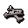

Ogre chieftain
| Config name | ogre_chieftan |
| NPC id | 852 |
| Combat level | 81 |
| Hitpoints | 60 |
| Attack / Strength / Defence | 75 / 71 / 75 |
| Respawn | 600 ticks |
| Options | Talk-to, Attack |
| Aggression | cowardly |
| Wander range | 3 tiles from spawn |
| Max range | 5 tiles from spawn |
| Area folder | area_yanille |
| Defined in | scripts/areas/area_yanille/configs/ogre.npc |
| Bonuses | Attack bonus 5, Strength bonus 7, Stab def 10, Slash def 21, Crush def 16 |
Ogre chieftain
Tough looking.
Show all 11 spawns on the world map → Open in knowledge graph →
Drops
Always dropped
| Item | Quantity | Rarity | Notes |
|---|---|---|---|
 Big bones | 1 | Always |
Locations
| Area | Coordinates | Level | Count | Map |
|---|---|---|---|---|
| Gu'Tanoth | 2505, 3032 | 0 | 1 | view |
| Gu'Tanoth | 2512, 3022 | 0 | 1 | view |
| Gu'Tanoth | 2518, 3041 | 0 | 1 | view |
| Gu'Tanoth | 2528, 3044 | 0 | 1 | view |
| Gu'Tanoth (underground) | 2568, 9432 | 0 | 1 | view |
| Wizards' Guild | 2615, 2987 | 0 | 1 | view |
| Wizards' Guild (underground) | 2573, 9447 | 0 | 1 | view |
| Wizards' Guild (underground) | 2579, 9441 | 0 | 1 | view |
| Wizards' Guild (underground) | 2580, 9431 | 0 | 1 | view |
| Wizards' Guild (underground) | 2611, 9454 | 0 | 1 | view |
| Wizards' Guild (underground) | 2616, 9447 | 0 | 1 | view |
Dialogue
Ogre chieftainGrrr! Go away from me, vermin!
Referenced in scripts
scripts/areas/area_yanille/scripts/ogre_chieftan.rs2